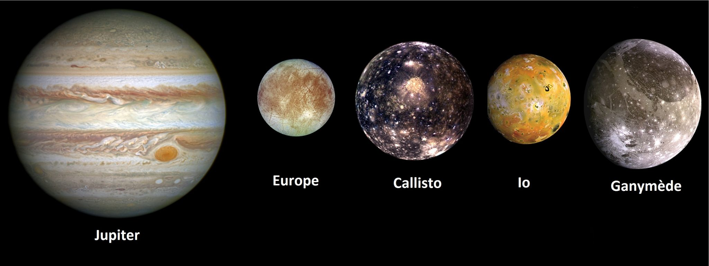

Jupiter est la plus grande planète de notre système solaire, avec un diamètre d'environ
139 822 km, soit plus de 11 fois celui de la Terre. Elle se trouve à une distance moyenne
d'environ 778 millions de kilomètres du Soleil et prend environ 12 ans pour accomplir une
orbite complète autour de celui-ci.

Jupiter possède de nombreux satellites naturels, dont les quatre plus grands sont connus sous le nom de
satellites galiléens, en l'honneur de leur découvreur, Galilée.Les quatre satellites galiléens sont
Io, Europe, Ganymède et Callisto, et ils ont tous été découverts en 1610.
Europe est le plus petit des quatre satellites galiléens,
mais il est très intéressant en raison de la présence d'un océan souterrain sous sa surface gelée.
Les scientifiques pensent que cet océan pourrait contenir des conditions propices à la vie.
Callisto est le deuxième plus grand satellite de Jupiter et est également très ancien, avec une surface couverte
de cratères d'impact. Il possède également un faible champ magnétique.
Io est le plus proche de Jupiter et est connu pour être l'un des objets les plus volcaniquement actifs
du système solaire. Il possède de nombreux volcans actifs qui crachent de la lave et des cendres dans l'espace,
créant un environnement extrême et fascinant.
Ganymède est le
plus grand satellite de Jupiter et le plus grand satellite naturel de tout le système solaire. Il possède un
noyau métallique et un champ magnétique, et il est également couvert de cratères, de canyons et de montagnes.